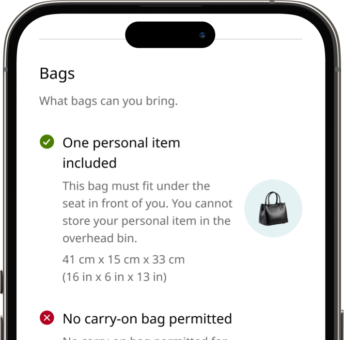
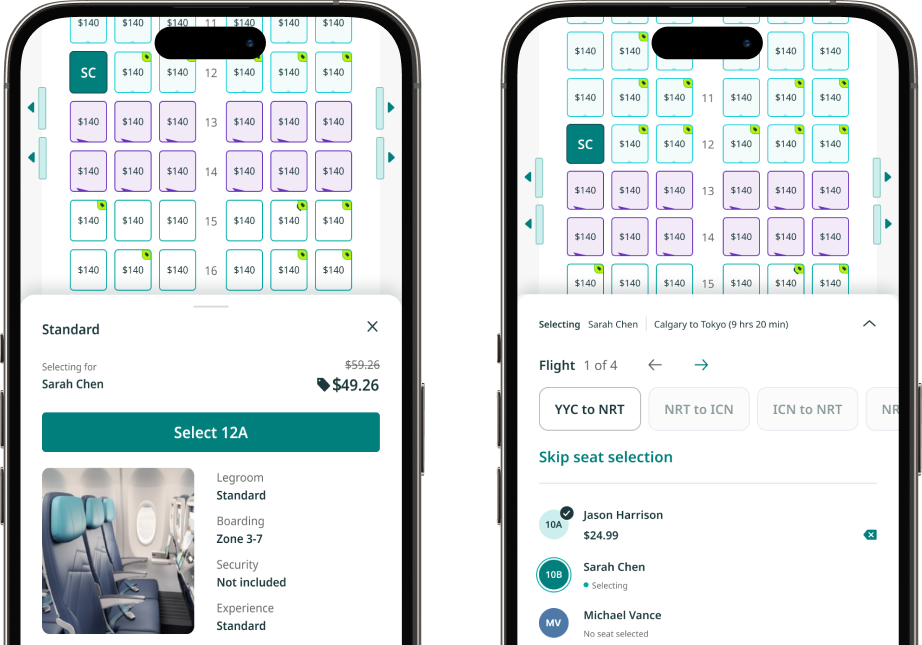
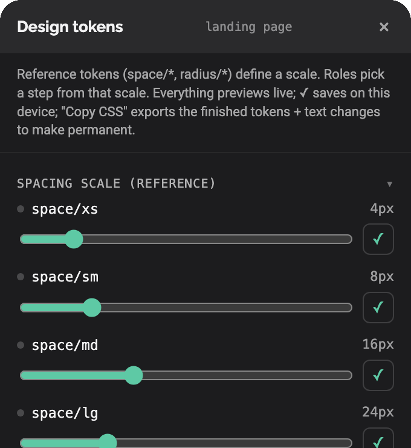
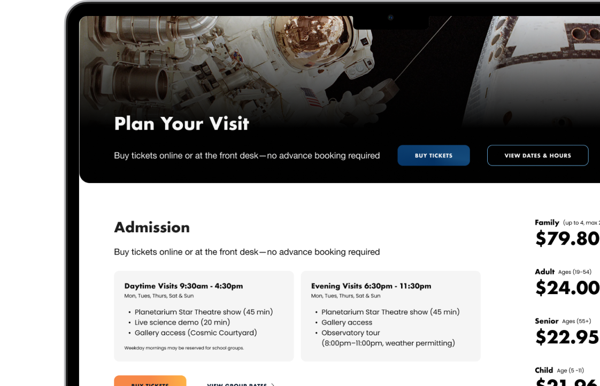
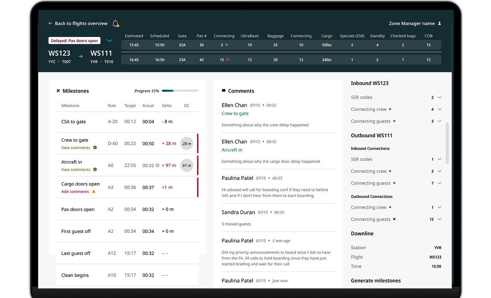

Product Strategy • Team Leadership • E-commerce
Creating two product experiences in six months

UltraBasic and Extended ComfortHighlights
- Senior Product Designer at WestJet, leading e-commerce from booking to loyalty for millions of guests a year.
- Led e-commerce design that earned over $80M in revenue in 2025.
- 5+ years designing consumer commerce, internal tools, and brand systems.
- Prototypes and builds in code with Claude Code. This site included.
- Passionate about inclusive design. Pursuing Web Accessibility certification (WCAG).
UX Strategy • Mobile + Web • E-commerce • Design Systems
Modernizing the seat selection experience

Seat selection

AI-assisted Prototyping • Design Engineering • Motion
Designing in code with an AI agent

Building this portfolioDesign Systems • Brand Strategy • UX Strategy
Building a Design System and Website from the Ground Up

H.R. MacMillan Space Centre0→1 Product Design • IA • Dashboards
Designing dashboards to monitor airplane arrivals and departures.

Turn Tool About
About